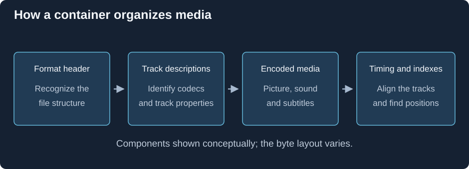

What Is a Media Container?
Imagine extracting a film's encoded picture bytes and soundtrack bytes into two separate files. To play them together, software still needs to know which decoders to use, when each piece belongs, and how to find the point you ask to watch. A container supplies the organization around those components.

The jobs are shared across container families; the arrangement of bytes differs.
A file reader typically obtains three kinds of information. Track descriptions identify encoded components and their configuration. Media storage divides or groups their data so it can be read. Timing and navigation connect the groups with positions in the presentation.
Follow a subtitle alongside a scene
Suppose a dialogue subtitle should appear from 12.4 to 14.0 seconds. The file must identify it as a subtitle component, store its text or bitmap, and associate it with those times. The video for that scene and its sound are other components. Reading them from one file does not make their internal encodings the same.
The container reader extracts the chosen components and passes them to the appropriate decoder or renderer. The playback system schedules their results against a shared presentation time. That is how several differently encoded sequences become one viewing experience.
Additional information can describe the track's language, name a chapter, or carry a font used by the subtitle renderer. These objects do not all behave like timed media: an attached font is a supporting file, while a subtitle event has a presentation interval.
A seek asks a different question from ordinary reading
Reading sequentially asks for the next data. Seeking to 12 minutes asks where data for that time lives and where decoding can restart. A container's index or sample tables can map time to locations. Codec dependencies then determine whether earlier pictures must also be decoded.
MP4 commonly describes stored samples through tables; Matroska groups media in clusters and can index them with Cues. The general job is the same, even though a reader follows different structures.
For Emby, this distinction makes a packaging change useful when the selected streams already suit an app but their container reader does not. Remuxing recreates those descriptions and data arrangements in another format. Decoding the picture is a separate job, so the encoded picture can travel unchanged through a new container.